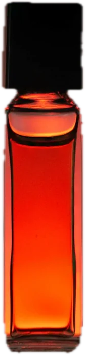

1 ml 5 ml10 ml
5 ml10 ml1 ml2510
01 · Studio (current, refined)Clean studio with size chips
Today's popup, tightened: chips sit on top of the vials and the details float in a corner card, so there's no side column.
+ Keyboard arrows switch size · swipe on phones